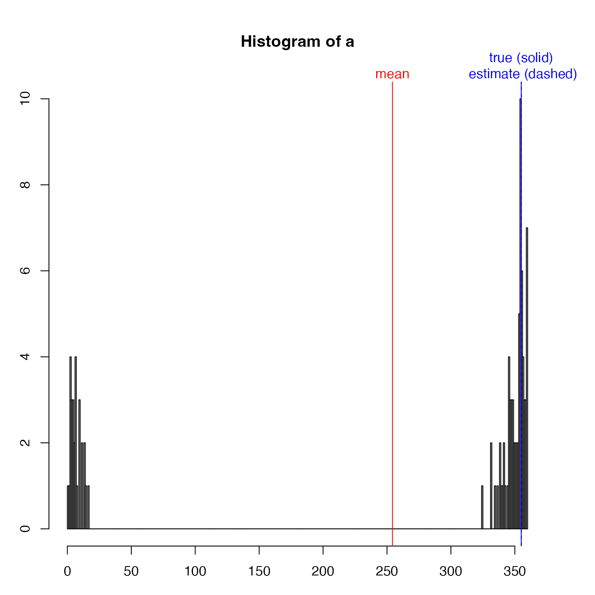

This is mostly used for instrument heading angles, in cases where the
instrument is aligned nearly northward, so that small variations in heading
(e.g. due to mooring motion) can yield values that swing from small angles
to large angles, because of the modulo-360 cut point.
The method is to use the cosine and sine of the angle, to construct "x" and
"y" values on a unit circle, then to find means and medians of x and y
respectively, and finally to use atan2() to infer the angles.
unwrapAngle(angle)
| angle | an angle (in degrees) that is thought be near 360 degrees, with added noise |
|---|
A list with two estimates: mean is based on an arithmetic
mean, and median is based on the median. Both are mapped to the range
0 to 360.
library(oce) true <- 355 a <- true + rnorm(100, sd=10) a <- ifelse(a > 360, a - 360, a) a2 <- unwrapAngle(a) par(mar=c(3, 3, 5, 3)) hist(a, breaks=360)